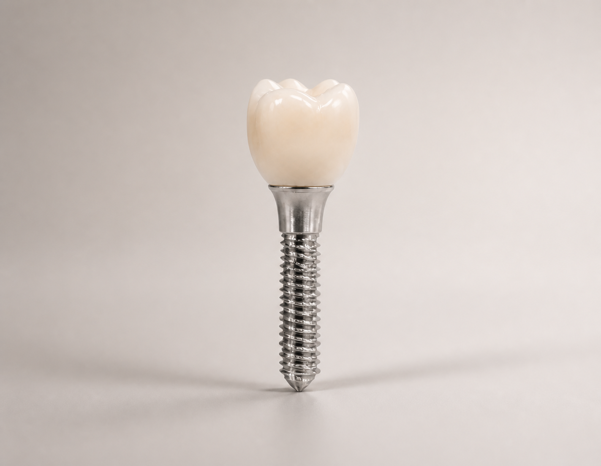
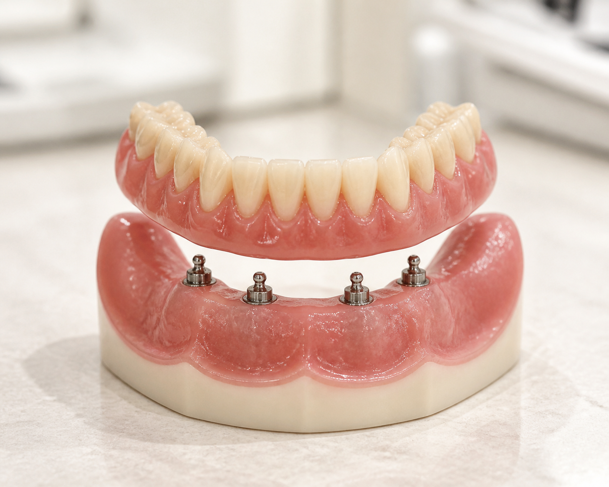
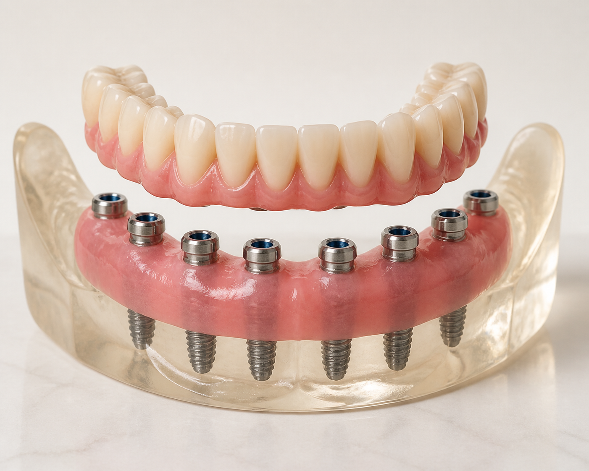

자연치아같은 감동 임플란트
보여지는 모습도, 씹는 기능도 본래 자연치아 같은
365서울감동치과 임플란트를 만나보세요.
꼼꼼하고 정확한 분석을 바탕으로
환자에게 꼭 필요한 치료만을 제시해드립니다.

보여지는 모습도, 씹는 기능도 본래 자연치아 같은
365서울감동치과 임플란트를 만나보세요.
꼼꼼하고 정확한 분석을 바탕으로
환자에게 꼭 필요한 치료만을 제시해드립니다.
본래 치아의 역할을 대신하려면
환자의 구강 상태를 상세히 살펴
그에 맞는 계획을 수립한 후,
정확한 위치에 식립하고,
환자에게 꼭 맞는 보철물을 제작해야 합니다.
감동치과는 환자의 구강 상태와 보철 계획을 고려해
적합한 임플란트 재료를 선택합니다.
기능적·심미적으로 자연치아에 가까운 것은 물론,
저작력 또한 자연치아의 80%에 달할 만큼 우수합니다.
보여지는 모습도, 씹는 기능도 본래 자연치아 같은
365서울감동치과 임플란트를 만나보세요.
꼼꼼하고 정확한 분석을 바탕으로
환자에게 꼭 필요한 치료만을 제시해드립니다.

본래 치아의 역할을 대신하려면
환자의 구강 상태를 상세히 살펴
그에 맞는 계획을 수립한 후,
정확한 위치에 식립하고,
환자에게 꼭 맞는 보철물을 제작해야 합니다.
감동치과는 환자의 구강 상태와 보철 계획을 고려해
적합한 임플란트 재료를 선택합니다.
기능적·심미적으로 자연치아에 가까운 것은 물론,
저작력 또한 자연치아의 80%에 달할 만큼 우수합니다.
보여지는 모습도, 씹는 기능도 본래 자연치아 같은
365서울감동치과 임플란트를 만나보세요.
꼼꼼하고 정확한 분석을 바탕으로
환자에게 꼭 필요한 치료만을 제시해드립니다.
본래 치아의 역할을 대신하려면 환자의 구강 상태를 상세히 살펴 그에 맞는 계획을 수립한 후, 정확한 위치에 식립하고 환자에게 꼭 맞는 보철물을 제작해야 합니다.

감동치과는 환자의 구강 상태와 보철 계획을 고려해
적합한 임플란트 재료를 선택합니다.
기능적·심미적으로 자연치아에 가까운 것은 물론,
저작력 또한 자연치아의 80%에 달할 만큼 우수합니다.
3D CT와 구강 스캔으로 보이지 않는 뼈와 신경 위치까지 읽고, 360도 모의 수술로 가장 적합한 식립 위치를 찾습니다. 환자 맞춤 가이드부터 보철과 교합까지, 처음부터 마지막까지 오차를 줄이는 디지털 임플란트를 완성합니다.

눈으로 보이지 않는 잇몸뼈와 신경 위치까지 3D CT와 구강 스캔 장치로 확인합니다.
보이지 않는 부분까지 미리 확인해 더욱 안전하고 세밀한 식립 계획을 세울 수 있습니다.

360도 모의 수술로 식립 위치와 깊이, 각도를 미리 설계합니다.
수술 중 발생할 수 있는 변수를 미리 확인해 부담과 오차를 줄입니다.

환자의 구강 구조에 맞춘 가이드로 계획한 위치를 실제 수술에 그대로 연결합니다.
의료진의 감에만 의존하지 않아 계획한 결과를 더욱 정밀하게 구현합니다.

디지털 가이드를 따라 계획한 위치와 각도에 임플란트를 정확하게 식립합니다.
안정적인 고정과 자연스러운 보철을 위한 탄탄한 기반을 만듭니다.

보철 후 치아의 맞물림과 힘의 균형까지 디지털로 확인합니다.
특정 부위에 쏠리는 부담을 줄여 오래도록 편안하게 사용할 수 있습니다.

3D 진단 시퀀스를 불러오는 중입니다.
남아 있는 치아와 잇몸뼈, 평소 식사 습관과 비용 부담까지 함께 살펴 치료 범위를 설계합니다.

임플란트 틀니는 임플란트를 2~4개 정도 식립한 뒤 틀니와 연결해 고정력을 보완하는 방법입니다. 기존 틀니보다 흔들림을 줄여 착용감과 저작 기능을 높이면서, 전체 임플란트보다 비용 부담을 낮출 수 있습니다.

구강 상태에 따라 9개 이상의 임플란트를 식립하고 크라운 브릿지로 연결해 전체 치아처럼 사용할 수 있습니다. 치아의 모양과 높이, 맞물림까지 함께 설계해 자연스러운 인상과 안정적인 저작 기능을 회복합니다.
임플란트 치료 사례